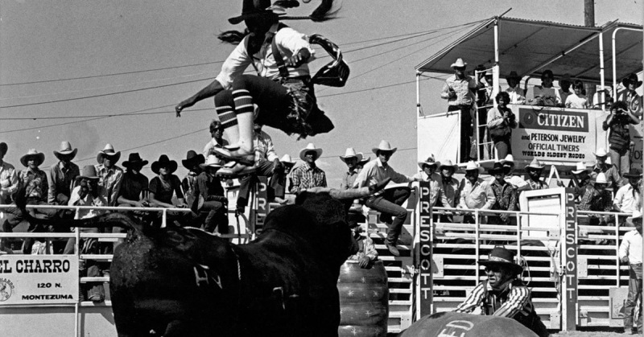
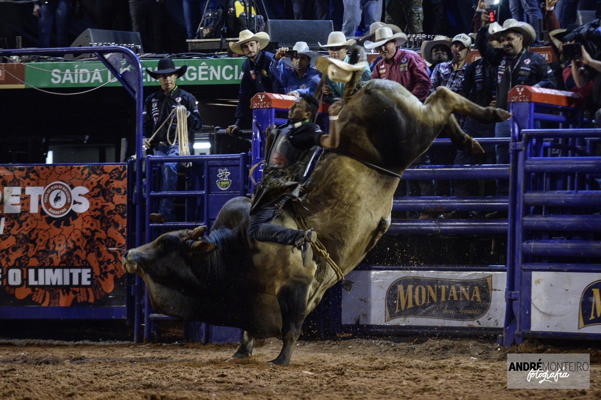

O rodeio tem suas raízes nas práticas dos vaqueiros, que realizavam competições informais para demonstrar suas habilidades no manejo do gado. Essas atividades se tornaram mais organizadas com o tempo, dando origem aos rodeios como os conhecemos hoje. No mundo: Estados Unidos: O primeiro rodeio registrado ocorreu em Deer Trail, Colorado, em 1869.
Os rodeios possuem diversas importâncias, que vão além do entretenimento: Cultural: Preservação da tradição: Rodeios são eventos que celebram e mantêm viva a cultura sertaneja e a história dos peões e do trabalho com o gado, transmitindo essa herança para as novas gerações. Identidade regional: Em muitas regiões do Brasil e de outros países, o rodeio é um elemento central da identidade local, fortalecendo o senso de comunidade e o orgulho regional. Expressão artística: A música sertaneja, a moda country, a culinária típica e outras manifestações culturais estão intrinsecamente ligadas aos rodeios, enriquecendo a diversidade cultural. Ponto de encontro: Rodeios são eventos sociais importantes, que reúnem famílias e amigos, proporcionando momentos de lazer e convívio. Econômica: Geração de renda e empregos: Os rodeios movimentam a economia local, gerando empregos diretos e indiretos nos setores de turismo, hotelaria, alimentação, transporte, comércio e serviços relacionados. Atração turística: Rodeios atraem visitantes de diversas regiões, impulsionando o turismo local e injetando recursos nas comunidades. Fomento do agronegócio: Rodeios valorizam a figura do peão e a cultura do campo, contribuindo para a divulgação e o fortalecimento do setor agropecuário. Movimentação financeira: Os eventos envolvem premiações, patrocínios, vendas de produtos e serviços, gerando um significativo volume de recursos financeiros. Social: Apoio a causas sociais: Muitos rodeios realizam ações de arrecadação de fundos para instituições de caridade e promovem a solidariedade. Revelação de talentos: Rodeios oferecem espaço para que peões mostrem suas habilidades e conquistem reconhecimento no cenário esportivo.
